Account originations
KeyBank account opening
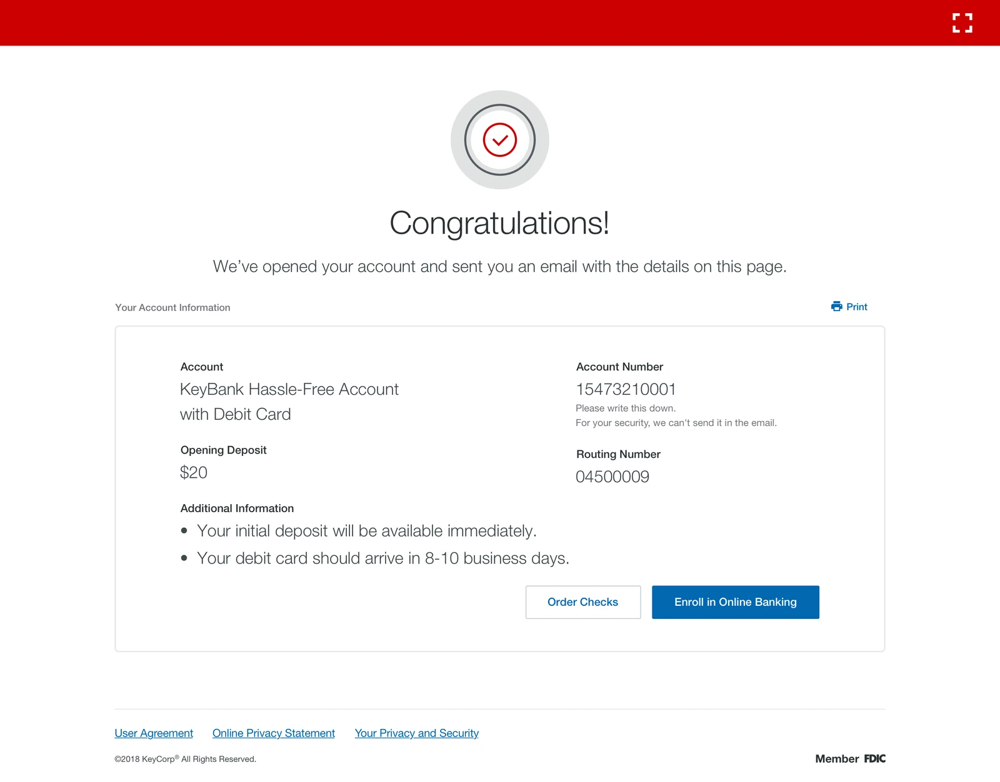
Background
I lost a $75,000 direct deposit client because Key Counselor crashed mid-way and I couldn't get it to work. Client left the branch frustrated.
The average time it took for KeyBank customers to open a deposit account in branch was 55 minutes. The process was excruciatingly slow and unreliable, resulting in several customers taking their business to another bank. Since 51% of their prospective and 63% of their existing customers preferred going to a branch to open accounts, KeyBank was losing money.
KeyBank leadership also wanted to streamline the account opening experience into one overall flow that could replace their then disparate online and in branch experiences.
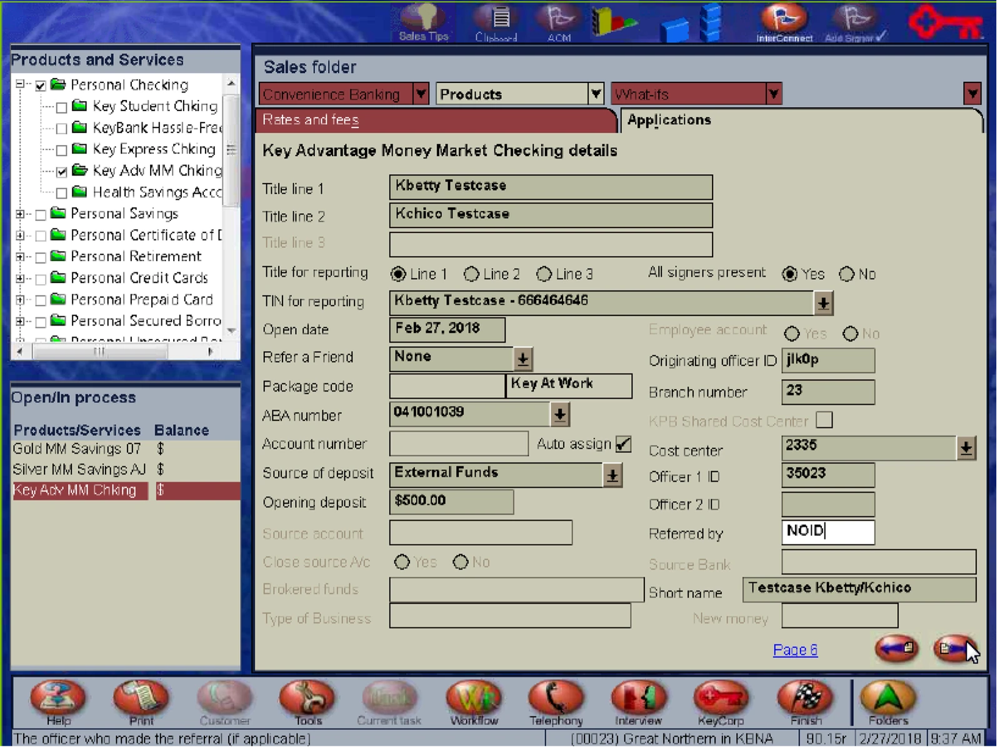
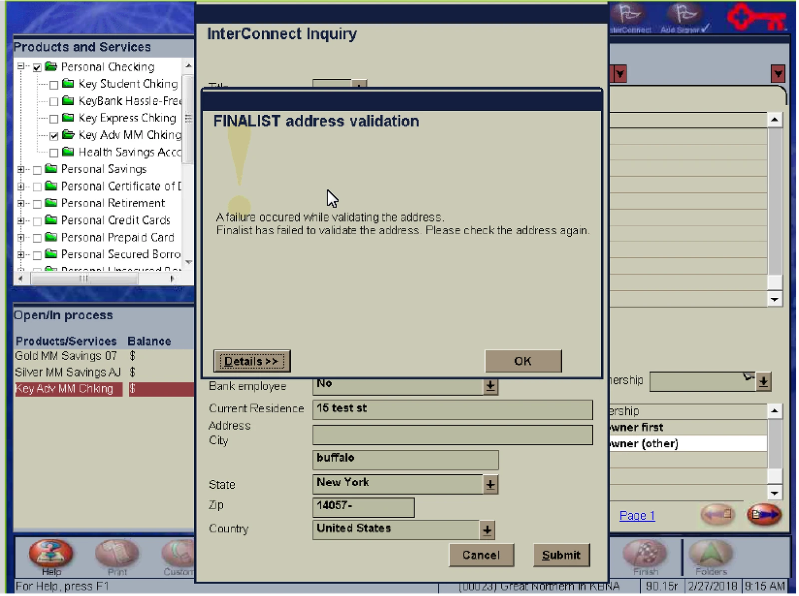
Project goals
The ask from KeyBank executives was to bring the average account opening time in branch to under 15 minutes. On top of that, our UX proposal had to be able to scale to a self service experience online.
The project was initiated in March of 2018 with a UX delivery timeline of six months. What was in scope over those six months:
- Competitor landscape. How other banks opened a deposit account, in branch and online.
- Process review. Working with business stakeholders and branch managers to review their actual processes.
- Business and legal alignment. Getting KeyBank's business and legal groups aligned on the design proposals.
- An end to end flow. A redesigned in branch flow that was then also extended to their online account opening flow.
Team and role
A UX Lead, me as the UX Designer, and a visual experience designer. My responsibilities included:
- Creating interaction design flows
- High-fidelity mock ups
- Prototyping
- Organizing leadership reviews
- Usability testing
Design and outcomes
Given KeyBank's ask to create a proposal that could easily scale to a self service online experience, I focused on designing for end customers who may not have the same financial expertise as a branch associate. That is a harder audience than a trained banker, and it set the bar for every question in the flow.
After analyzing competitors' account opening flows, I aligned with decision makers at KeyBank to eliminate several redundant and unnecessary steps. I also proposed areas where data collection could be automated, which saved more time. With the remaining steps I designed an experience that followed logical steps, and worked with a UX writer to reframe questions so that collecting information was easy and transparent.
The redesigned end to end flow was delivered for the branch and then extended to KeyBank's online account opening flow. These are the outcomes measured after launch.
88% Reduction in account opening time
Under 5 min Average opening time, goal was under 15
4 Follow-on contracts awarded by KeyBank
Experience
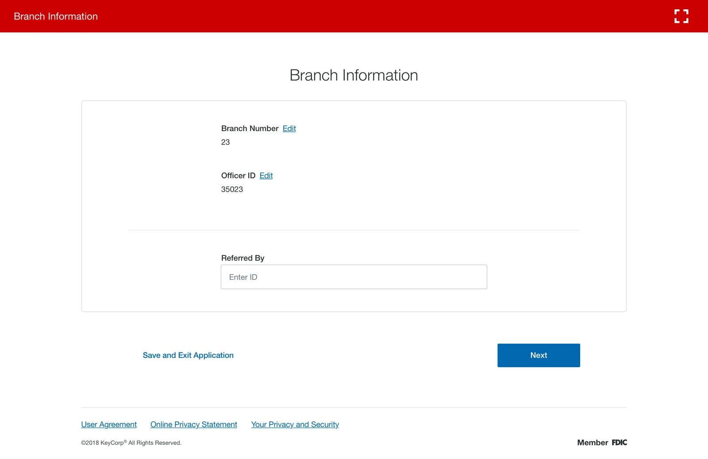
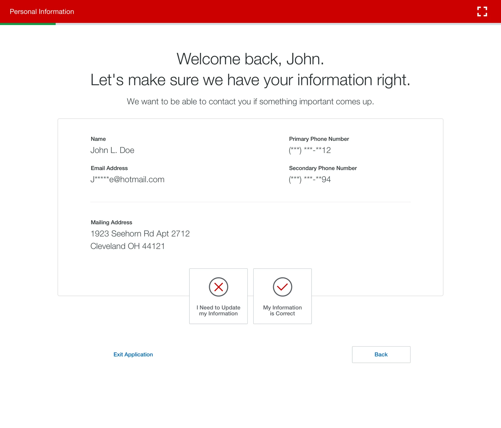

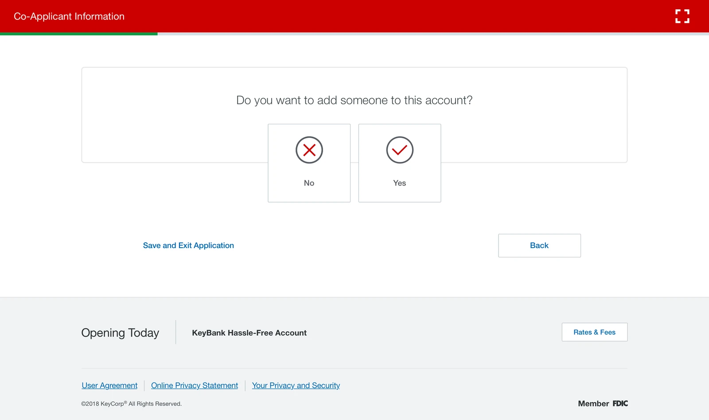
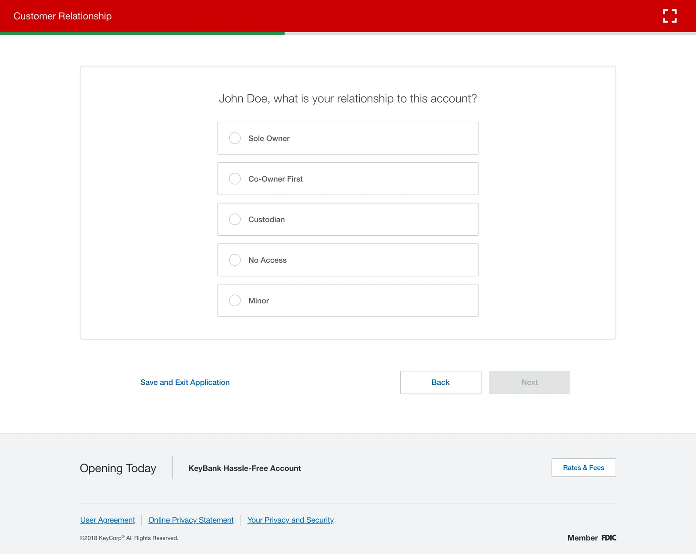
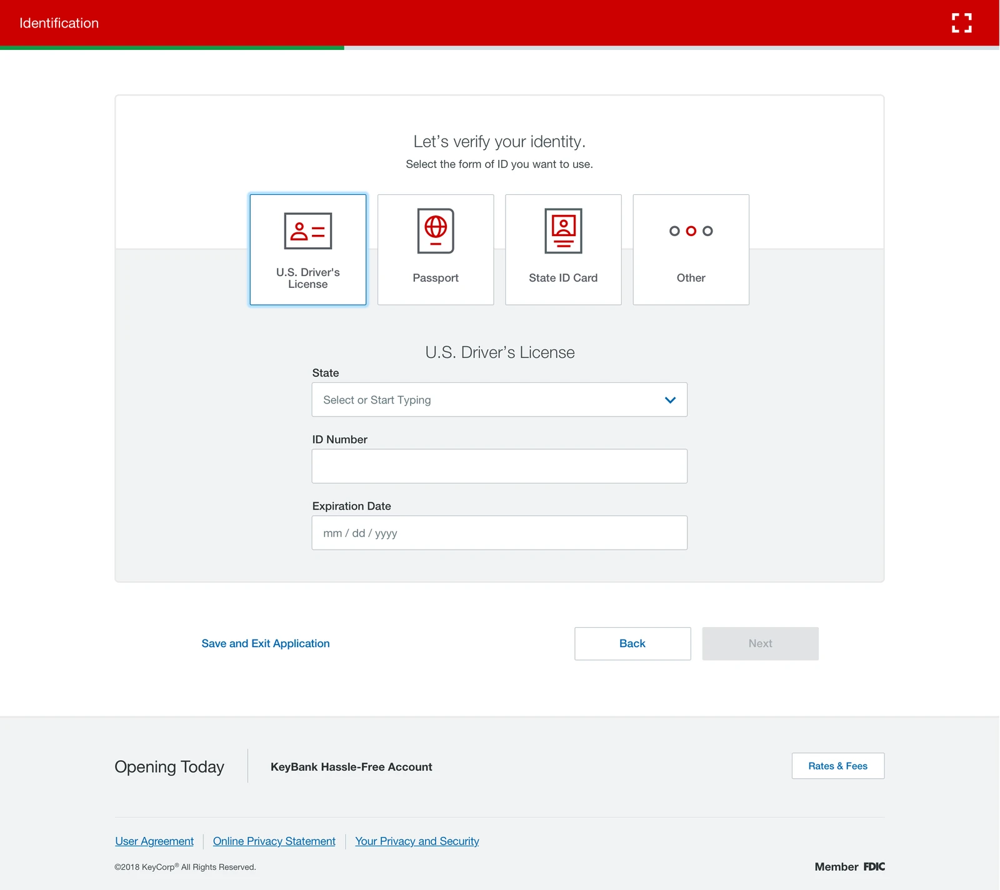
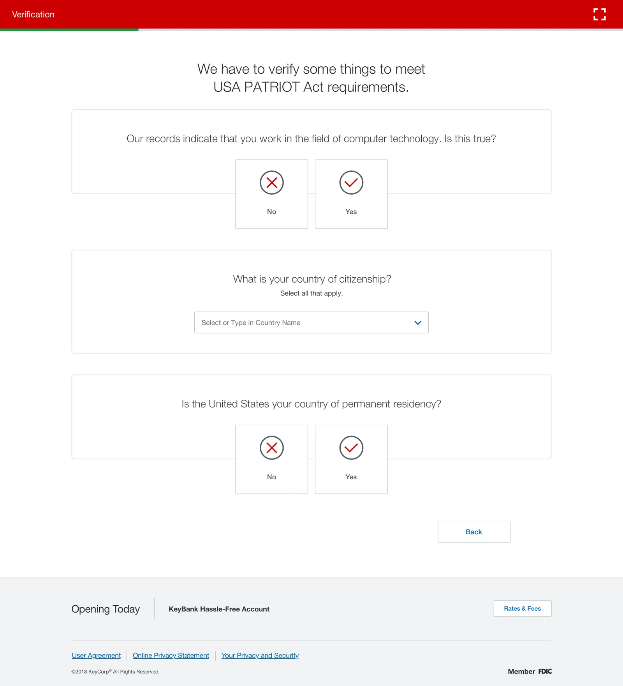
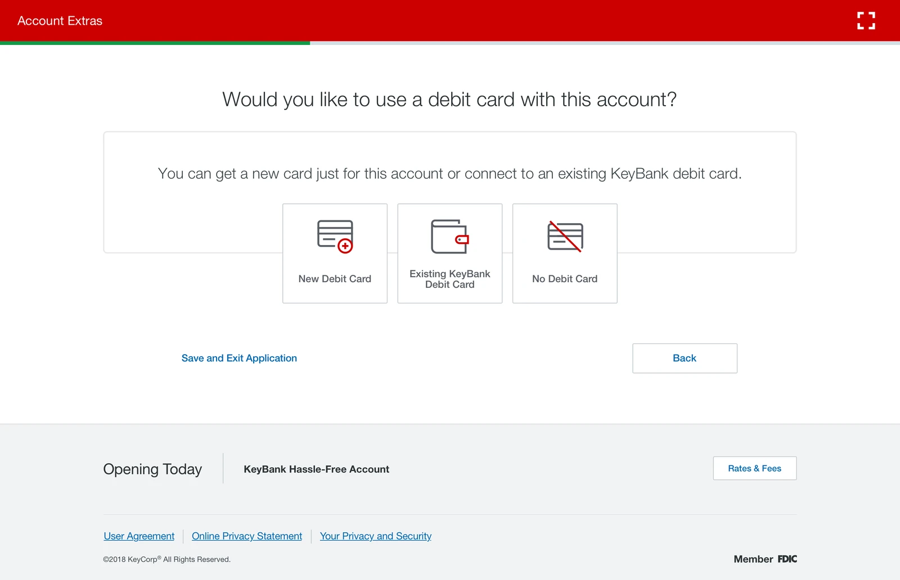
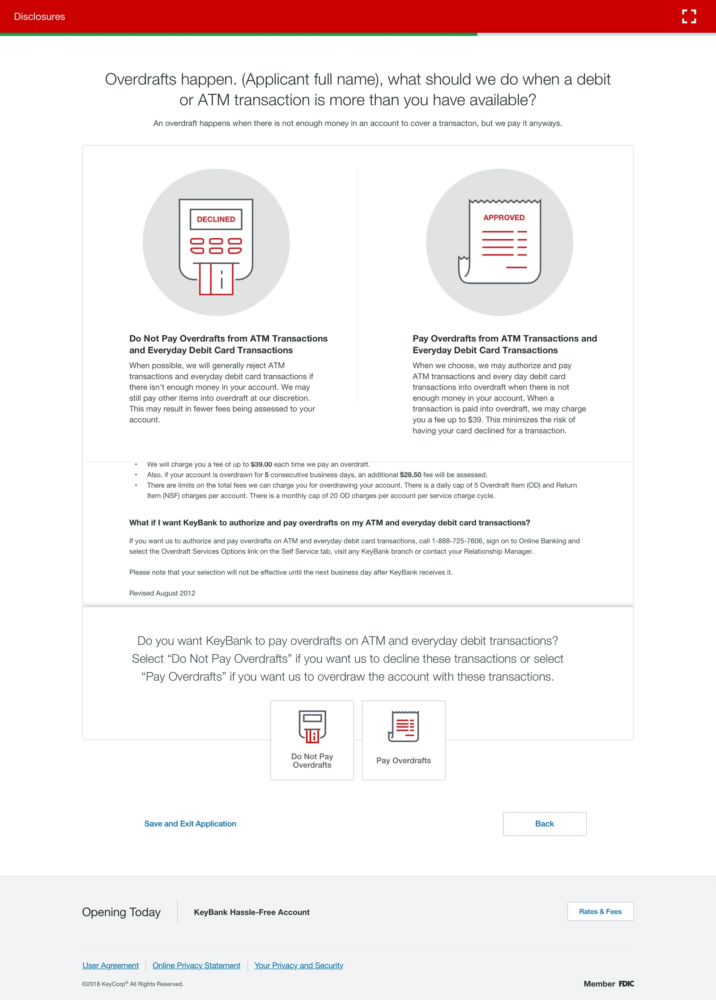

This page shows only parts of the project. In-depth and sensitive details, and the end-to-end UX, can be covered in person or during the interview process.